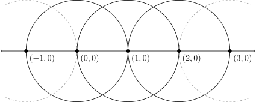

Using an unmarked straightedge and a compass, we can draw straight lines connecting any two points and draw circles centered at a point with an arc passing through another point. By applying these two basic operations a finite number of times, we can construct a wide variety of shapes and proofs: triangles, squares, and polygons with different numbers of sides. This has been known since ancient times. However, many constructions have proved elusive! Can we “square the circle”—that is, construct a square with the same area as a given circle? Can we double the size of a cube?
Let’s see what makes these problems so tricky by first exploring the kinds of points we can create with just our ruler and compass.
Starting with two points (0,0) and (1,0), connect them with a line, then draw a circle around the rightmost point. They intersect at (2, 0). Repeating this procedure in both directions gives us all the integers along the x-axis.

Let’s add a more interesting point. Keep our initial circle around (0, 0) with radius 1, and draw a new circle around (2, 0) with radius 2. Where do these two circles intersect?
Each circle can be represented by an equation, and solving for when they are equal gives us our two intersection points.
\begin{align} x^2 + y^2 &= 1 \\ (x-2)^2 + y^2 &= 2^2 \end{align}
Subtracting (1) from (2) cancels out the squared terms and solves for x:
\begin{align*} (x - 2)^2 + y^2 - (x^2 + y^2) &= 2^2 - 1 \\ x² - 4x + 4 + y^2 - x^2 - y^2 &= 3 \\ -4x &= -1 \\ x &= \frac{1}{4} \end{align*}
Substituting back into (1) finds both y coordinates:
\begin{align*} (\frac{1}{4})² + y² &= 1 \\ y² &= \frac{15}{16} \\ y &= \frac{±\sqrt{15}}{4} \end{align*}
These are some interesting numbers! A rational value for x, and two irrational square roots for y.
Can we reach a transcendental number, such as \pi? We are drawing circles, so it seems like we should be able to. This is what we need to square the circle: a unit circle has area \pi, so a square matching that area must have side length \sqrt{\pi}.
Alas, this is impossible! But it wasn’t until quite recently in the history of mathematics that anyone proved it. To do so, let us explore some more general results about the points we have been creating.
First, observe that if we only have rationals, then any combination of addition, multiplication, subtraction, and division will only ever give us another rational. We can’t get \pi with those alone. We call a set with this property, such as the rationals, a field.1
We were also able to produce a square root, but that used a new technique: finding the root of a polynomial (y^2 = \frac{15}{16}). This number is not in our original field, but we can extend it to include this new element by taking every element in the original field (i.e., every rational number), both adding and multiplying it by the new element, and adding all the resulting elements into the original set. For example, this leads to numbers like 1 + 1·\frac{\sqrt{15}}{4}, 2 + 1·\frac{\sqrt{15}}{4}, \frac{1}{2} + \frac{3}{4}·\frac{\sqrt{15}}{4}, etc., all being added to the original set of rationals. This new set also forms a field—combining any two elements from it results in a third element also from the set.2
This process can be repeated! We can extend this new field again with a different element (say, \sqrt{3}) in the same manner.
There are three things we can say about these extensions, which we will not prove:
Any particular field extension by polynomial root finding has a degree, which is the highest power in the simplest polynomial solved for the new element(s). For example, extending a field with \sqrt[3]{3} would have degree 3, since x^3 - 3 = 0 is the simplest polynomial with that as a root.
Extending a field by a transcendental number has infinite degree, because (by definition) such a number cannot be expressed with any finite set of powers.
When extending a field twice in succession, multiply their degrees together to get the degree of the extensions considered together. Extending a field by \sqrt{2} (degree 2) and then by \sqrt[3]{3} (degree 3) gives a degree of 2·3=6 for the combined extension.
To return to our problem of constructing \pi: If we can characterise the possible field extensions from our ruler and compass operations, we can show which extension degrees are possible … and therefore also which ones are impossible.
A line can be represented by an equation y = ax + b. A circle by (x - a)^2 + (y - b)^2 = r^2. The intersection of two lines can be found by solving simultaneous equations:
\begin{align*} y_1 &= ax_1 + b \\ y_2 &= cx_2 + d \end{align*}
This is clearly a linear equation, meaning the solution can be found with our fundamental operations of addition, multiplication, subtraction, and division. Therefore, the result will remain in our field and no extension is necessary. Put another way, if we start with only rational numbers, using line intersection alone we can only ever get more rational numbers.
We saw above that the intersection of two circles can be found by solving a polynomial with highest power 2. This implies the field extension needed to include the new element will also be of degree 2.
A circle and a line intersection results in a similar polynomial equation, also leading to an extension with degree 2.
These are the only three possible operations, and using them we only found a way to extend our field by a degree of 2. We know that multiple extensions will multiply degrees together, so we can conclude that our degree will always be a power of 2!
This answers our original question, with a bonus result for good measure:
Since we must only use a finite number of operations, there is no path to an extension with infinite degree, so it is impossible to construct transcendental numbers such as sqrt(\pi) and e.
We can find square roots, fourth roots, eighth roots, and so on—but not cube roots, since that would require a power of 2 to be divisible by 3. This proves it impossible to double the volume of a unit cube, since it would require an edge length of \sqrt[3]{2}.